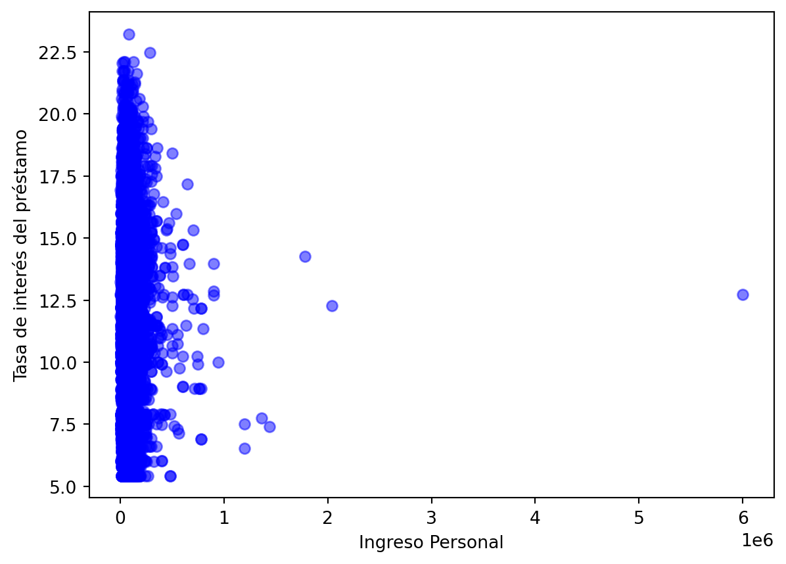

En este primer capítulo discutiremos el concepto de riesgo de crédito y definiremos cómo se calcula. Utilizando tablas cruzadas y gráficos, expliraremos un conjunto de datos del mundo real. Antes de aplicar el aprendizaje automático (Machinne Learning), procesaremos estos datos encontrando y resolviendo problemas.
1.1 Comprender el riesgo créditicio
1.1.1 ¿Qué es el riesgo crediticio?
El riesgo crediticio es el riesgo de que alguien que ha pedido dinero prestado no lo pague todo. Piense en este riesgo como la diferencia entre prestar dinero a una persona y comprar un bono del gobierno. Con los bonos gubernamentales, es casi seguro que se reembolsarán, pero no cuando se presta dinero a la gente. Un préstamo está en mora cuando la agencia crediticia está razonablemente segura de que el préstamo no será reembolsado. Usaremos modelos de Machine Learning para determinar esto.
Consideremos este ejemplo: hemos prestado 300 dólares a alguien que ha realizado dos pagos pero no el pago final.
Pago
Fecha de Pago
Estado del Préstamo
$100
15 de Junio
Non-Default
$100
15 de Julio
Non-Default
$0
15 de Agosto
Default
Es en este punto cuando consideramos que el préstamo está en mora. Predecir esto de antemano nos resulta útil para estimar la pérdida esperada.
1.2 Pérdida Esperada
La pérdida esperada es la cantidad que la empresa pierde como resultado del incumplimiento de un préstamo. La pérdida esperada es un cálculo simple de los siguientes tres componentes.
La probabilidad de incumplimiento (PDI), que es la probabilidad de que alguien incumpla con un préstamo.
Exposición en caso de incumplimiento (EXI), que es el monto pendiente en el momento del incumplimiento.
La pérdida en caso de incumplimiento (PEI), que es la relación entre la exposición y cualquier recuperación de la pérdida.
Según nuestro ejemplo, los $100 que nos debían son nuestra exposicíon, y si vendemos esa deuda por $20, nuestra pérdida en caso de impago sería del 80% .
La fórmula para la pérdida esperada es el producto de los tres componentes previos, es decir,
\[
expected\_loss = PDI\times EXI\times PEI
\]
Este curso se centrará en la probabilidad de incumplimiento.
1.3 Tipos de datos utilizados
Para modelar la probabilidad de incumplimiento generalmente tenemos dos tipos principales de datos disponibles:
Los datos de la solicitud, que son datos que están directamente vinculados a la solicitud del préstamo, como la calificación del préstamo.
Datos de comportamiento (Behavior), describen al destinatario del préstamo, como la duracción de empleo
Solicitud
Comportamiento (behavior)
Tasa de interés
Antiguedad del empleo
Calificación
Incumplimiento Historico
Cantidad
Ingreso
1.3.1 Columnas de datos
Los datos que utilizaremos para nuestras predicciones de probabilidad de incumplimiento incluyen una combinación. Esto es importante porque los datos de la aplicación (solicitud) no son tan buenos como los datos de la aplicación y el comportamiento (behavior) juntos. Entonces, se incluyen dos columnas que emulan los datos que se pueden comprar en las agencias de crédito.
La adquisión de datos externos es una práctica común en la mayoría de las organizaciones. Estas son las columnas disponibles en el conjunto de datos.
Columna
Columna
Ingresos
Grado del préstamo
Edad
Monto del préstamo
Propiedad de vivienda
Tasa de interés
Antiguedad Laboral
Estado del préstamo
Intención del préstamo
Incumplimientos históricos
Porcentaje de ingresos
Duración del historial crediticio
Algunos ejemplos son: ingresos personales, porcentaje del monto del préstamo sobre los ingresos de la persona y duración del historial crediticio. Considere el porcentaje de ingresos. Esto podría afectar el estado del préstamo si el monto del préstamo es mayor que sus ingresos, porque es posible que no puedan hacer frente a los pagos.
1.4 Explorando con tablas cruzadas
Nuestros datos tienen 32 mil filas, lo que puede resultar difícil de ver todas a la vez.
Primero cargamos los datos, de la siguiente manera en Python.
import pandas as pdcr_loan = pd.read_csv("cr_loan2.csv")cr_loan.head()
person_age
person_income
person_home_ownership
person_emp_length
loan_intent
loan_grade
loan_amnt
loan_int_rate
loan_status
loan_percent_income
cb_person_default_on_file
cb_person_cred_hist_length
0
22
59000
RENT
123.0
PERSONAL
D
35000
16.02
1
0.59
Y
3
1
21
9600
OWN
5.0
EDUCATION
B
1000
11.14
0
0.10
N
2
2
25
9600
MORTGAGE
1.0
MEDICAL
C
5500
12.87
1
0.57
N
3
3
23
65500
RENT
4.0
MEDICAL
C
35000
15.23
1
0.53
N
2
4
24
54400
RENT
8.0
MEDICAL
C
35000
14.27
1
0.55
Y
4
Importante mencionar que el paquete pandas nos permite manipular datos, dado que nuestros datos son tipo .csv entonces utilizamos la función .read_csv() de pandas. y por último la función head() nos permite ver las primeras 5 filas de nuestros conjunto de datos.
Ahora bien, usaremos la función crosstab() de pandas. Podemos usar esta función para ayudar a obtener una vista de alto nivel de los datos similar a las tablas dinámicas en Excel.
Aquí, vemos que los datos se agruparon por estado del préstamo y propiedad de la vivienda, y luego se calculó la tasa de interés promedio.
1.5 Explorar con Imágenes
Además de utilizar tablas cruzadas, podemos explorar el conjunto de datos visualmente. Para ello usaremos el paquete matplotlib para crear un diagrama de dispersión de la tasa de interés del préstamo y los ingresos del destinatario.
import matplotlib.pyplot as pltplt.scatter(cr_loan["person_income"], cr_loan["loan_int_rate"], c ="blue", alpha =0.5)plt.xlabel("Ingreso Personal")plt.ylabel("Tasa de interés del préstamo")plt.show()

Al igual que la tabla cruzada, los gráficos nos ayudan a obtener una vista de alto nivel de nuestros datos.
1.6 Resumen
Hemos definido el riesgo crediticio , los componentes de la pérdida esperada y los métodos para explorar los datos del riesgo crediticio con la intención de estimar la probabilidad de incumplimiento.
Ahora practiquemos un poco con Python.
1.7 Ejercicio en Python
Conozcamos la estructura de los datos imprimiendola con ayuda de Python.
person_age person_income person_home_ownership person_emp_length \
0 22 59000 RENT 123.0
1 21 9600 OWN 5.0
2 25 9600 MORTGAGE 1.0
3 23 65500 RENT 4.0
4 24 54400 RENT 8.0
loan_intent loan_grade loan_amnt loan_int_rate loan_status \
0 PERSONAL D 35000 16.02 1
1 EDUCATION B 1000 11.14 0
2 MEDICAL C 5500 12.87 1
3 MEDICAL C 35000 15.23 1
4 MEDICAL C 35000 14.27 1
loan_percent_income cb_person_default_on_file cb_person_cred_hist_length
0 0.59 Y 3
1 0.10 N 2
2 0.57 N 3
3 0.53 N 2
4 0.55 Y 4
Veamos la distribución de montos de préstamo con un histograma.
n, bin, patches = plt.hist(x = cr_loan["loan_amnt"], bins ="auto", color ="blue", alpha =0.7, rwidth =0.85)plt.xlabel("Monto del préstamo")plt.show( )
Creemos un diagrama de dispersión de los ingresos y la edad de una persona. En este caso, el ingreso es la variable independiente y la edad es la variable dependiente.
loan_status 0 1 \
loan_grade A B C D E F G A B C
person_home_ownership
MORTGAGE 5219 3729 1934 658 178 36 0 239 324 321
OTHER 23 29 11 9 2 0 0 3 5 6
OWN 860 770 464 264 26 7 0 66 34 31
RENT 3602 4222 2710 554 137 28 1 765 1338 981
loan_status
loan_grade D E F G
person_home_ownership
MORTGAGE 553 161 61 31
OTHER 11 6 2 0
OWN 18 31 8 5
RENT 1559 423 99 27
Tabla cruzada de home_ownership, con loan_status y promedio de loan_percent_income
loan_status 0 1
person_home_ownership
MORTGAGE 0.146504 0.184882
OTHER 0.143784 0.300000
OWN 0.180013 0.297358
RENT 0.144611 0.264859
Por último cree un diagrama de caja del porcentaje del préstamo de los ingresos de la persona agrupada por loan_status
cr_loan.boxplot(column = ['loan_percent_income'], by ='loan_status')plt.title('Average Percent Income by Loan Status')plt.suptitle('')plt.show()
1.8 Valores atípicos en los datos crediticios
Como ocurre con cualquier probelma de Machine Learning, la preparación de datos es el primer paso. ¿Pero por qué? cuando nuestros datos están preparados adecuadamente, reducimos el tiempo de entrenamiento de nuestros modelos de aprendizaje automático. Además, los datos preparados también pueden tener un impacto positivo en el rendimiento de nuestro modelo. Esto es importante porque queremos que nuestros modelos predigan los incumplimientos correctamente con la mayor frecuencia posible. Considere este gráfico de la República de China.
Este muestra la precisión de tres modelos diferentes sobre los mismos datos en diferentes etapas de procesamiento. La línea azul claro representa un modelo entrenado con datos ordenados y preparados, mientras que el modelo de la línea naranja se entrenó con datos sin procesar. La línea azul claro representa el modelo más preciso, porque la curva está más cerca de la esquina superior izquierda. Veremos más gráficos como este más adelante cuando verifiquemos la precisión de nuestros modelos.
1.8.1 Valores atípicos y rendimiento
El primer tipo de preparación que veremos es la detección y eliminación de valores atípicos. Desafortunadamente, los sistemas de entrada de datos que producen datos incorrectos son bastante comunes. Si el especialista en ingreso de datos estaba cansado o distraído, puede ingresar valores incorrectos en nuestro sistema. También es posible que las herramientas de ingestas de datos creen valores erróneos en nuestros datos como resultado de problemas técnicos o fallas del sistema.
Entradas (Feature)
Coeficiente con valores atípicos
Coeficientes sin valores atípicos
Tasa de interés
0.2
0.01
Antiguedad Laboral
0.5
0.6
Ingresos
0.6
0.75
Con valores atípicos en nuestros datos de entrenamiento, nuestros modelos predictivos tendrán dificultades para estimar parámetros como los coeficientes. Esto puede hacer que nuestros modelos no predigan tantos incumplimientos. Piense en los coeficientes como cuánto se pondera cada columna o característica para determinar el estado del préstamo. Observe las diferencias de coeficientes en el ejemplo de la tabla. Es posible que los valores atíplicos en la tasa de interés pueden hacer que esa columna tenga mucho más peso de lo normal. Esto afectará las predicciones.
1.8.2 Detectar valores atípicos con tablas cruzadas
Una forma de detectar valores atípicos es utilizar tablas cruzadas con funciones agregadas como las que ya hemos mostrados en la sección anterior.
Aquí utilizaremos una tabla cruzada de los datos de nuestros préstamos de crédito como antes para encontrar la tasa de interés promedio.
Para este ejemplo, podríamos esperar ver valores a la izquierda con nuestros datos normales. Sin embargo, tal como se muestra en la figura de abajo, podría haber algunos valores extremos en los datos que darían como resultado los datos de la derecha de la imagen. Esto causaría problemas con el modelado. Imaginese tener una tasa de interés del 50%.
Otra forma de detectar valores atípicos es utilizar imagenes. Para ello podemos utilizar fácilmente gráficos como histogramas y diagramas de dispersión, que vimos previamente. }
plt.scatter(cr_loan['person_emp_length'], cr_loan['loan_int_rate'],c='blue', alpha=0.5)plt.xlabel('Duración de empleo de persona')plt.ylabel('Tasa de interés del préstamo')plt.show()
Aquí, podemos ver que un par de registros tienen la duración del empleo de una persona establecida en más de 100 años. Esto sugeriría que dos solicitantes de préstamo tienen más de 136 años. Esto, al menos por ahora, no es posible.
1.8.3 Eliminar valores atípicos
Sabemos que los valores atípicos son un problema y queremos eliminarlos, pero ¿cómo? Podemos usar fácilmente el método drop() del paquete pandas para eliminar filas de nuestros datos.
Primero usamos un subconjunto básico de Python para encontrar filas con una duración de empleo de nuestra persona mayor a 60.
indices = cr_loan[cr_loan["person_emp_length"] >=60].indexcr_loan.drop(indices, inplace =True)
Lo que esto devuelve es la posición del índice de esa fila en nuestro marco de datos. A partir, de ahí, llamamos al método drop en nuestro marco de datos para que elimine las filas del marco de datos que coindicen con las posiciones de índice encontradas anteriormente.
plt.scatter(cr_loan['person_emp_length'], cr_loan['loan_int_rate'],c='blue', alpha=0.5)plt.xlabel('Duración de empleo de persona')plt.ylabel('Tasa de interés del préstamo')plt.show()
Ahora podemos ver visualmente que los valores atípicos se han eliminado según nuestros criterios y los datos parecen mucho más realistas.
1.8.4 Practica
Imprimamos la tabla cruzada de loan_status y person_home_ownership con el máximo de person_emp_length
min max
person_home_ownership MORTGAGE OTHER OWN RENT MORTGAGE OTHER OWN RENT
loan_status
0 0.0 0.0 0.0 0.0 38.0 24.0 31.0 41.0
1 0.0 0.0 0.0 0.0 34.0 11.0 17.0 27.0
Visualicemos un diagrama de dispersión de la edad de la persona en el eje x y loan_amnt en el eje y.
Cree un diagrama de dispersión de la edad en el eje x y la tasa de interés del préstamo en el eje y con una etiqueta para loan_status.
import matplotlibimport matplotlib.pyplot as pltcolors = ["blue","red"]plt.scatter(cr_loan_new['person_age'], cr_loan_new['loan_int_rate'], c = cr_loan_new['loan_status'], cmap = matplotlib.colors.ListedColormap(colors), alpha=0.5)plt.xlabel("Person Age")plt.ylabel("Loan Interest Rate")plt.show()
1.9 Riesgos con datos Faltantes en los datos de préstamo
Una vez eliminados los valores atípicos de nuestro conjunto de datos, ahora podemos centrarnos en otro problema con los datos crediticios y es cuando faltan datos.
1.9.1 ¿Qué datos faltan?
Normalmente, podría pensar que faltan datos cuando falta una fila completa, pero esa no es la única forma en que pueden faltar datos. Es posible que falten datos cuando hay valores nulos en lugar de valores reales. También puede ser una cadena vacía en lugar de una cadena real. En este curso, nos referimos a datos faltantes cuando no estén presentes valores específicos, no cuando falten filas enteras de datos.
Si vemos una fila de datos con valores faltantes en un marco de datos de Pandas, se verá así.
Vemos NAN, en el campo de duración de empleo, en lugar de un valor.
1.9.2 Similitudes con valores atípicos
Un problema relacionado con los datos faltantes es similar a los probelmas causados por los valores atípicos en el sentido de que afecta negativamente el rendimiento del modelo predictivo. Puede sesgar nuestro modelo de maneras imprevistas, lo que puede afectar la forma en que predecimos los incumplimientos. Esto podría llevarnos a predecir una gran cantidad de incumplimientos que en realidad no son incumplimientos porque el modelo está sesgado hacia los incumplimientos. Además, muchos modelos de aprendizaje automático en Python no ignoran automáticamente los valores faltantes y, a menudo, arrojan errores y dejan de entrenar.
A continuación se muestran algunos ejemplos de datos faltantes y posibles resultados. Si hay valores nulos en columnas numéricas o de cadena , el modelo arrojará un error.
Tipo dato missing
Posible Resultado
NULL en columna numerica
Error
NULL en columna string
Error
1.9.3 Cómo manejar los datos faltantes
Entonces, ¿cómo manejamos los datos faltantes? En la mayoría de los casos se trata de tres maneras. A veces necesitamos reemplazar los valores faltantes. Esto podría reemplazar un valor nulo con el promedio de esa columna. Otras veces eliminamos la fila con datos faltantes todos juntos. Por ejemplo, si hay valores nulos en el monto del préstamo, debes eliminar esas filas por completo. A veces también nos faltan valores. Este, sin embargo, no es el caso con la mayoría de los datos de préstamos. Comprender los datos lo dirigirá hacia una de estas tres acciones.
Por ejemplo, si el estado del préstamo es nulo, es posible que el préstamo se haya procesado recientemente en nuestro sistema.
A veces hay un retraso en los datos y se necesita tiempo adicional para el procesamiento. En este caso, deberíamos eliminar toda la fila.
Otro ejemplo es cuando falta la edad de la persona. Aquí, podríamos reemplazar los valores de edad que faltan con la mediana de la edad de todos.
Missing Data
Interpretación
Acción
NULL in loan_status
Préstamo recientemente aprovado
Eliminar de los datos de predicción
NULL in person_age
Edad no registrada ni revelada
Reemplazar con mediana
1.9.4 Encontrar datos faltantes
Pero, ¿cómo encontramos los datos faltantes? Con Pandas, podemos encontrar datos faltantes como nulos usando la función isnull() y la función de sum() para contar las filas a las que les faltan datos. Al combinar las funciones isnull, sum y any, contamos todos los valores nulos en cada columna.
Como puede notar, esto produce una tabla que muestra el recuento de registros con valores nulos en los datos.
1.9.5 Reemplazo de datos faltantes
Si decidimos reemplazar los datos faltantes, podemos llamar al método .fillna() de pandas junto con funciones agregadas. Esto reemplazará solo los valores faltantes.
En este ejemplo, que muestraré a continuación, reemplazamos las tasas de interés nulas con el promedio de todas las tasas de interés en los datos.
Eliminar filas con datos faltantes es como eliminar filas con valores atípicos, como el el video anterior. Usamos el método de caída de pandas. Aquí, encontramos las filas con datos faltantes usando isnull y luego eliminamos las filas del conjunto de datos por completo.
indices = cr_loan["person_emp_length"].isnull().indexcr_loan.drop(indices, inplace =True)